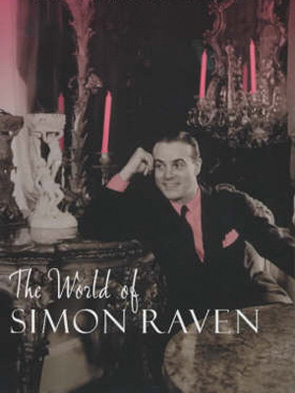
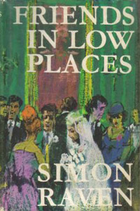
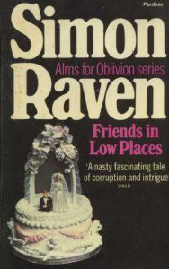
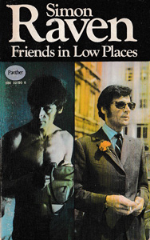
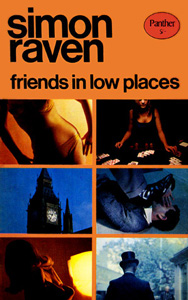

Con-man and recently widowed. Appeared in The Rich Pay Late.
Gambler. Has obtained a letter from a minister of Lebanon after having seduced the minister's son. The letter indicates that part of the British government planned the Suez crisis together with France and Israel.
Member of the Tories. Father of Patricia and Isobel and soon to be father-in-law of Tom Llewellyn, a fact he has grudgingly accepted. Considers himself as the all-knowing eminence of his party.
Leader of the parliamentary group called "Young England." Homosexual with a very promiscuous lifestyle. Friend of Morrison and Captain Detterling.
Former army man and aspiring writer. Protagonist of Fielding Gray and a main character in The Sabre Squadron. Terribly disfigured after a bomb exploded in his face during a mission on Cyprus 1958. Received a decent pension from the army but is now trying to become a writer with the help of his old friend Somerset Lloyd-James.
Former officer and at present MP. Appeared in Fielding Gray, Sound the Retreat, The Sabre Squadron and The Rich Pay Late. Becomes the partner of his old colleague Fielding Gray when he moves into the world of literature.
The younger daughter of Sir Edwin Turbot and soon-to-be wife of Tom Llewyllyn. Knows very little about life.
The very patient wife of Lord Canteloupe. Appears in Sound the Retreat after she had lost her son in India.
Director. Appeared in The Rich Pay Late. Has some kind of odd relationship with Penelope Holbrook.
Provost of Lancaster College and member of the board of Strix. A man of high moral standing. Appeared in Fielding Gray, The Sabre Squadron and The Rich Pay Late.
Decent journalist. Friend of Tom Llewyllyn and best man at his wedding. Appeared also in The Sabre Squadron and The Rich Pay Late.




The story starts in the little town of Menton (April 1959) where Angela Tuck spends some time with the recently widowed con-man Mark Lewson. Lewson, who's waiting for some economic gain, steals 40,000 francs from Angela and is trying to his luck at a casino. After he's lost almost everything he is rescued by professional player Max de Freville and leaves the casino with 100,000 francs. De Freville makes him a proposition. Two of his colleagues, gamblers Stratis Lykiadopolous and Jacques des Moulins, have got hold of an interesting letter since the latter has seduced the son of a minister of Lebanon.
This letter proves that the British government (or part of it) planned the Suez crisis together with Israel. Since the two men want to protect the minister's son they’ve hidden the letter. De Freville wants Lewson to steal the letter and he accepts the mission and goes to Venice, where Lykiadopolous lives. During this time, old friends Alistair Dixon and Rupert Percival have a discussion about who is going to succeed the former when he retires as MP for the seat of Bishop's Cross. As things turn out, both Peter Morrison and Somerset Lloyd-James are candidates for selection. Fielding Gray, who has, quite literally, lost his face in a bomb explosion and has retired from the army, sees his old friend Somerset Lloyd-James to ask for work. The always Jesuitical Lloyd-James can’t see a reason to refuse and will give his old friend some work in the literary field.
Gray also meets Tom Llewyllyn, who has become a successful writer. Llewyllyn is soon to be married to Patricia Turbot, the younger daughter of the politician Sir Edwin Turbot. During a party at the Turbot mansion, where Lord Canteloupe is drinking rather heavily, Carton Weir appears to give news about Canteloupe becoming company secretary of British Recreational Resources. Many people around Canteloupe think this is outrageous since they consider him a moron. Mark Lewson is trying to get hold of the letter and succeeds after the son of the minister is killed by a bomb in Paris. Lykiadopolous simply gives it to him since he no longer has any reason to hide it. Lewson also frequents director Burke Lawrence, who is pestered by former model Penelope Holbrook. De Freville tells Lewson to "do" something about the letter.
Lloyd-James manages to kick Robert Constable off the board of Strix on a technicality. He replaces him with Lord Canteloupe. Gregory Stern wants to become publisher for Gray and even print an edited version of his journal, in more literary form. Gray becomes a lodger at Tessie's, who also takes in Jude Holbrook, who hasn’t been seen in years. Lewson manages to sell the letter to Lloyd-James and the two of them visit Sir Edwin to persuade him to give the party's support to Lloyd-James. Tom and Patricia marry at midsummer and most of the characters attend the wedding. Grey and Morrison meet for the first time since 1955, Salinger is trying to suck up to the rather drunk Lord Canteloupe and even Sir Edwin becomes rather drunk and sentimental. A cigarette causes a fire and the firemen arrive right at the moment when Isobel Turbot and Mark Lewson take off in a sports car. A fireman is killed in the tumult.
Lord Canteloupe struggles with a camp site he has constructed called “Westward Ho!” With the help of Maisie, Jude Holbrook nabs the letter from Lloyd-James. Unknowing, Sir Edwin has made his party support Lloyd-James. De Freville, plagued by mental problems, gives a last scandalous evening of gambling and later tells his friend Captain Detterling about the letter and the many twists the story has taken. A number of persons are now chasing Isobel and Mark (mostly Mark): a group consisting of Morrison, Detterling and Gray; the team Alfie Schroeder and Tom Llewyllyn and also Carlton Weir, sent out by Lloyd-James. Maisie tells Gray about how Holbrook stole the letter from Lloyd-James and after some detective work he finds him hiding at his mother's. Holbrook threatens Gray with acid but the already disfigured Gray isn’t very afraid and overcomes Holbrook. He is now owner of the letter.
At that time, Isobel and Mark arrive at “Westward Ho!” and try to act like normal campers. By coincidence almost all of the different search parties arrive at the site at the same time. Mark and Isobel, returning with their car, have an accident and Mark dies. While the friendly Stern is comforting the hysterical Isobel the other argues about what to do with the letter. Lord Canteloupe eventually destroys it. This doesn’t make things easier for Morrison since Sir Edward and the Tories continue to back Lloyd-James, a man they consider easier to handle than the always "moral" Morrison. Towards the end of the book Tom and Patricia can, at last, have their honeymoon while Stern marries Isobel. In the last scene Angela Tuck (again) and Max de Freville discuss everything that has happened.